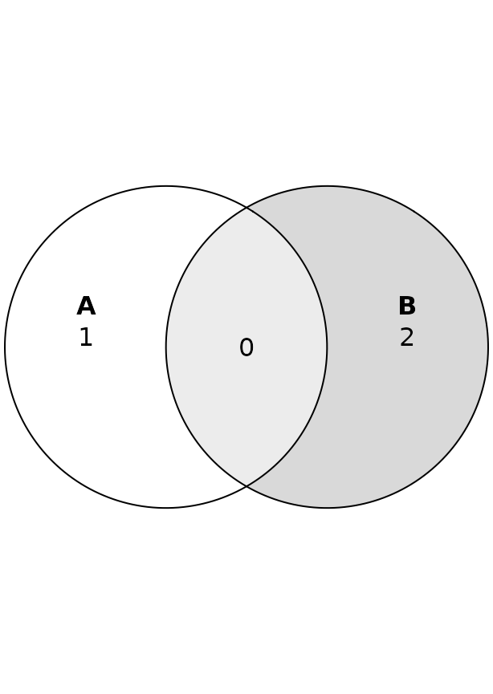
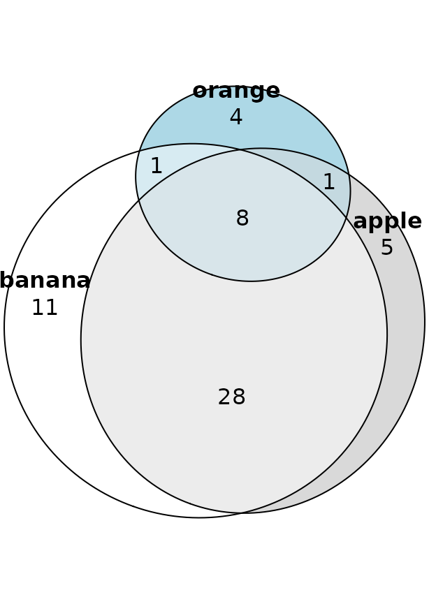
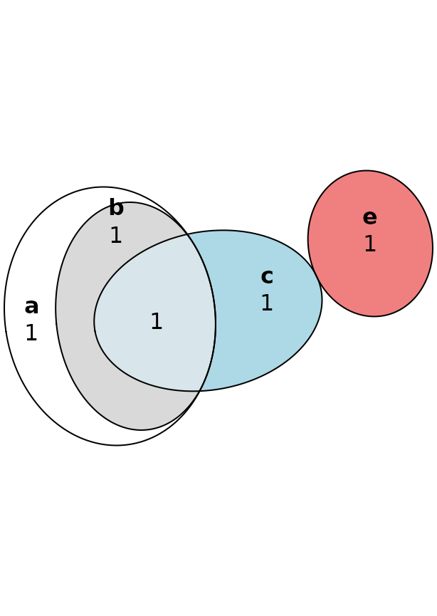
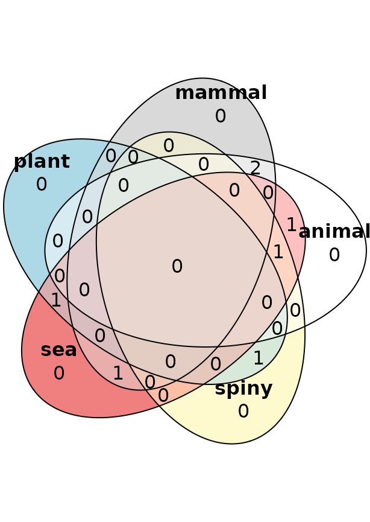
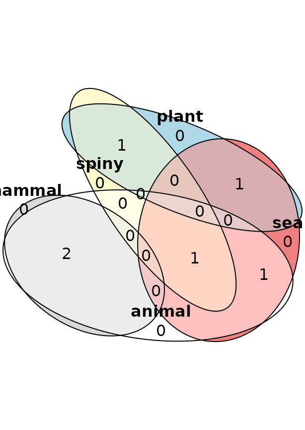

Venn diagrams with eulerr
Johan Larsson
2019-09-29
Source:vignettes/venn-diagrams.Rmd
venn-diagrams.RmdVenn diagrams are specialized Euler diagrams. Unlike Euler diagrams, they require that all intersections are represented. In most implementations—including eulerr’s—they are also not area-proportional.
The first requirement is often prohibitive in terms of interpretability since we often waste a considerable amount of space on the diagram’s canvas with intersections that just as well might be represented by their absence. An area-proportional Euler diagram is often much more intuitive and, for relatively sparse inputs, much easier to interpret. The property of being area-proportional may sometimes, however, be treacherous, at least if the viewer isn’t advised of the diagram’s faults.
In such instances, it is often better to give up on area-proportionality and use a Venn diagram. It might not be as easy on the eye, but at least will be interpreted correctly.
eulerr only supports diagrams for up to 5 sets. Part of the reason is practical. eulerr is built around ellipses and ellipses are only good for Venn diagrams with at most 5 sets. The other part of the reason has to do with usability. A five-set diagram is already stretching it in terms of what we can reasonably expect the viewer to be able to decipher. And despite the hilarity of banana-shaped six-set Venn diagrams, monstrosities like that are better left in the dark.
Examples of Venn and Euler diagrams
We will now look at some Venn diagrams and their respective Euler diagrams.


s4 <- list(a = c(1, 2, 3),
b = c(1, 2),
c = c(1, 4),
e = c(5))
plot(venn(s4))
plot(euler(s4, shape = "ellipse"), quantities = TRUE)

As you can see in the last plot, there are cases where Euler diagrams can be misleading. Despite the algorithm attempting its best to make the diagram area-proportional, the constraints imposed by the geometry of the ellipses prevent a perfect fit. This is probably a case where a Venn diagram makes for a good alternative. In the author’s opinion, the opposite is true for the rest.